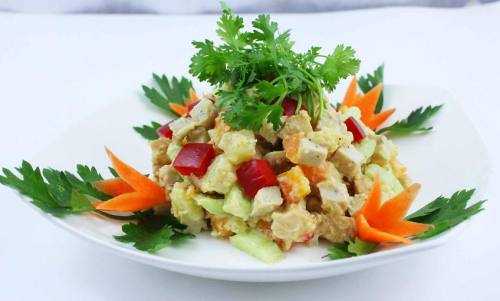

INGREDIENTS
1 Cup Boiled Peas
1 Cup Boiled Potato
1 Cup Boiled Carrots
1/2 Cup Boiled Corn
Make Sure all the vegetable are al dente
2 Cup Mayonnaise
1 Tsp Salt
1 Tsp Black Pepper
2 Tbsp Olive Oil
2 Tsp White Vinagar

⇒To get more instructions. Please watch the guide video behind